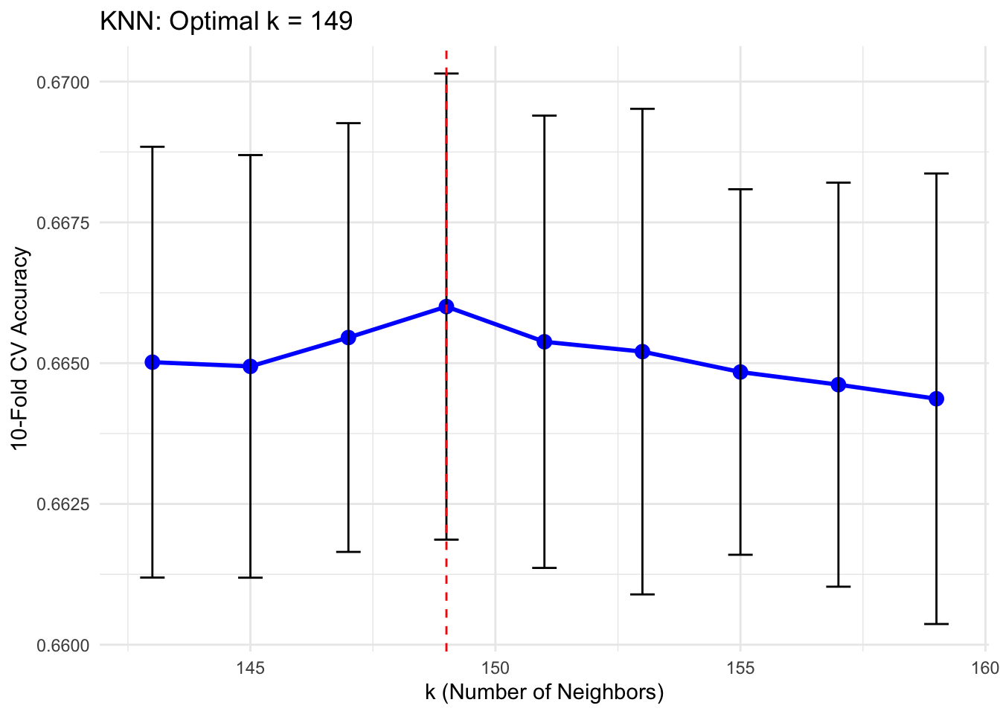

STATS202 Final Project
Selection
I conduct visualizations first. Some initial data exploration shows:
- The dependent variable is not imbalanced (\(\hat{p} = .4371\))
idandquery_idare unique identifiers.url_idis not clearly a unique identifier because the distribution of histogram buckets is not uniform.is_homepageis a binary variable.query_lengthis a count.sig3,sig4,sig5,sig6are all highly skewed.
I visualize the density of each predictor grouped by dependent variable. The overlay of the plots helps visualize whether the variable of interest is systematically higher for certain values of the predictors. To make the contrast more conspicuous, I log-transform the skewed variables. I also group predictor values into deciles and condition on the dependent variable. sig2 appears conspicuously useful as a separator of the dependent variable.
For completeness I investigate multicollinearity but find no significant \((|r| > .8)\) correlations. Variance inflation is also more germane to inference than to prediction; the point estimates with multicollinearity do not change even while standard errors increase.
Visualizations
Distributions of Variables
Histogram of Select Predictors Conditioned on Dependent Variable

Proportions of Select Predictors Conditioned on Dependent Variables Deciles

Correlation Plot
Query Length
Longer query lengths have a very high proportion of relevant entries. I calculate standard errors to see whether these trends are statistically significant or may result in over-fitting.
They are not statistically significant.
URL ID
Pre-processing
I code is_homepage as an unordered factor.
I remove query_length because the most predictive lengths are also the most rare. It is sensible to represent query_length as a factor variable, because the proportion of relevance does not appear to increase linearly, but factors introduce various challenges with prediction. If some factor is not present in the future data, then our trained model will not work. A compromise is necessary.
url_id will need to be handled differently. The numeric scale is not sensible but neither are factors, which would lead to over-fitting. Ultimately, it seems risky to include data that may be idiosyncratic, but I retain it because the stakes here are relatively low.
sig2, sig7, and sig8 appear to have regular drop-offs in the histograms. This is an artifact of the measurement scale, which records values in increments of \(0.01\). Some histogram bins therefore align with the allowed values and receive higher counts, while others fall between these values and receive few or none, producing the visible pattern of regular dips. This is not a problem for analysis.
There are no missing values.
Transformation
I apply the following transformations:
- Log-transform skewed variables (
sig3, sig4, sig5) for linear models.- This linearizes for LASSO, and monotone transformations are unlikely to hurt more flexible modeling strategies.
- I use
log1pfrom base R, which adds a constant of \(1\) to each value to avoid issues with zeros. The loss of the usual interpretability - where natural logs approximate percentage changes - is not important here.
- Two-part transformation for
sig6: create a dummy variable indicating zero values, then log-transform the positive values. This preserves the information in zeros (which show a higher proportion of relevance) while making the positive values less skewed. - I add binary variables for
query_length1 and 2, which are statistically significant according to my earlier visualization. - I add a factor variable for
url_idbelow \(30000\), the cutoff at which mean relevance was highest. - After transforming, I remove
url_idand other variables.
Note that I do not standardize at this stage. Since I will later use cross-validation, scaling of the variables should happen within each fold where appropriate.
| Variable | Type | Description | Transformation |
|---|---|---|---|
| relevance | Binary | Target variable (0 = not relevant, 1 = relevant) | None |
| is_homepage | Factor | Whether the URL is a homepage | Factor |
| sig1 | Continuous | Original signal feature 1 | None |
| sig2 | Continuous | Original signal feature 2 | None |
| log_sig3 | Continuous | Log-transformed sig3 | log1p(sig3) |
| log_sig4 | Continuous | Log-transformed sig4 | log1p(sig4) |
| log_sig5 | Continuous | Log-transformed sig5 | log1p(sig5) |
| sig6_is_zero | Binary | Indicator for sig6 = 0 | sig6 == 0 |
| log_sig6_positive | Continuous | Log of sig6 when positive | log(sig6) if sig6 > 0 |
| sig7 | Continuous | Original signal feature 7 | None |
| sig8 | Continuous | Original signal feature 8 | None |
| single_word_query | Binary | Query length = 1 | query_length == 1 |
| two_word_query | Binary | Query length = 2 | query_length == 2 |
| three_word_query | Binary | Query length = 3 | query_length == 3 |
| low_url_id | Binary | URL ID < 30000 | url_id < 30000 |
Data Mining
I will use 10-fold cross-validation to estimate generalization error for each modeling strategy. In all cases, I will evaluate model accuracy, picking the tuning parameters and then the strategy which maximizes accuracy.
My modeling strategies are:
- LASSO logistic regression: Suitable for correlated predictors and sparse data to reduce variance. Factor variables are one-hot encoded. The tuning variable is \(\lambda\), imposing a progressively higher penalty that shrinks coefficients towards zero. I use a “kitchen-sink” approach with all interactions.
- KNN: A simple, intuitive method that makes minimal assumptions about the data’s functional form. Factor variables are one-hot encoded; the curse of dimensionality is not salient given the relatively low dimensions. The tuning variable is \(k\), or the number of nearest neighbors.
- Random Forests: Well-suited to low-dimensional tabular data and capable of capturing complex, nonlinear interactions automatically without needing the earlier transformations; especially attractive given apparent splines in some variables (
sig1). Factor variables are not one-hot encoded because one-hot encoding increases the number of predictors, resulting in over-representation of factor variables by random forests. The tuning parameters are below:
rf_grid <- expand.grid(
mtry = c(2, 4, 6, default_mtry),
splitrule = "gini",
min.node.size = c(1, 5, 10)
)- I also use boosting with XGBoost. The tuning parameters are below:
params <- list(
objective = "binary:logistic",
eval_metric = "error",
max_depth = 6,
eta = 0.1,
subsample = 0.8,
colsample_bytree = 0.8
)Computational constraints limit somewhat my range of tuning parameters.
Interpretation/Evaluation
Boosting with XGBoost performs the best.
LASSO keeps many variables. The coefficients represent changes in the log odds ratio but analysts are discouraged from making inferences about them; it is a known feature of penalized regressions that correlated covariates may be included in the final model without having an underlying causal effect on the dependent variable.
The random forests model uses a generic 500 trees. sig2 is the most important feature. When sig2 is permuted, the model’s accuracy drops the most compared to any other predictor, so the forest relies heavily on it for splitting and prediction.
These results generally concur with the earlier visualizations. sig2 appeared to uniquely partition dependent and independent variables.
Below is a table summarizing results, followed by visualizations of each modeling strategy’s variable selection methods and performance.
| Model | CV Accuracy | Optimal Parameters |
|---|---|---|
| LASSO | 0.66605 | λ = 1e-04 |
| KNN | 0.66600 | k = 149 |
| Random Forest | 0.66614 | mtry = 3 |
| XGBoost | 0.66737 | iterations = 46 |
LASSO
| Feature | Coefficient |
|---|---|
| sig2 | 2.8803 |
| is_homepage1:sig7 | -1.7308 |
| (Intercept) | -1.5162 |
| sig1:sig7 | -1.4295 |
| sig7:sig8 | -1.3312 |
| is_homepage1:sig1 | 1.3215 |
KNN

Random Forests
XGBoost
Testing
A script for creating the test submissions is included in the GitHub Repository: https://github.com/24-bee-supply/stats-202-project.
## Conclusion
This was an instructive project. Textbooks, forums, and large language models have lowered the barriers to using the sophisticated data-mining techniques from this class. Most students’ results were relatively similar, but the top performers tended to share two strategies:
- They engineered new features.
- They iterated on their initial best-performing model.
My approach was more modest. I prioritized visualizing the data to better understand its functional form. I had assumed this emphasis would be relatively unique given the temptation to simply train a large, powerful neural network. But my efforts were incomplete. The log-transformations I applied, as noted earlier, theoretically mattered for linear models but not for more flexible ones. My attempts to find “signal” in the noise through data exploration should have been more analytical and model-agnostic. Including url_id was also almost certainly a mistake.
This experience highlights areas where I am eager to grow as a data scientist, particularly in embeddings, careful attention to the test data distribution, and quantifying over-fitting.
Dr. Tranh helped solidify a critical but, until recently, under-appreciated concept for me: it is important to make learning as easy as possible for the model. Powerful, flexible modeling strategies do not remove the need to understand and thoughtfully shape your data so that the problem is better-conditioned. Statistically, sprawling and complex models may achieve low bias but often at the cost of high variance, a pattern evident in the Kaggle competition’s private scores. Every machine learning course covers the bias-variance decomposition, but recognizing why simplicity matters in practice is, I think, a hallmark of mature modeling. Of course, it is also possible that I am wrong and complexity often pays. This is an area I am excited to explore.
Dr. Tranh’s emphasis on understanding your test data, even gaming the system if possible, was another important lesson. At various points in my analysis, especially involving the url_id and query_length variables, it occurred to me that certain assumptions might not generalize. Dogmatically, I refused to model the test data, but in real-world applications it is important to investigate whether your training data actually resembles the test data.
Finally, I am eager to learn more about learning curves and other diagnostics of over-fitting. It is easy to run cross-validation, optimize a loss function, and conclude that a model is adequate. I want to go further—developing analyses that quantify over-fitting and pinpoint how and where a model fails compared to alternatives. For example, the team that won the first stage of the competition but lost the second likely relied on cross-validation to estimate generalization error, yet their model underperformed against one that remained consistent across both stages. I want to understand and apply diagnostics that can detect such issues, even when the modeling process appears rigorous.